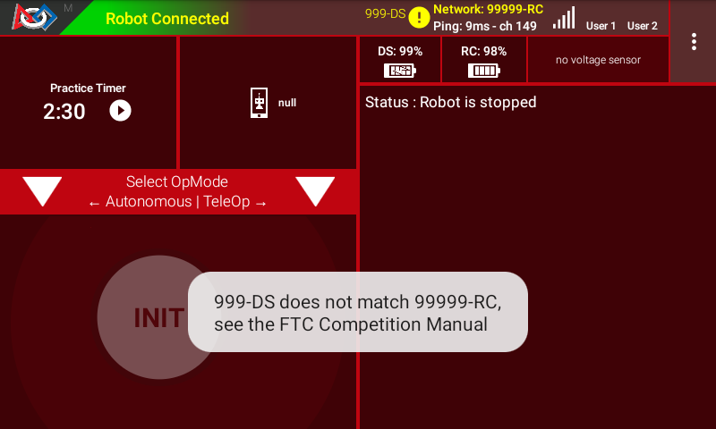
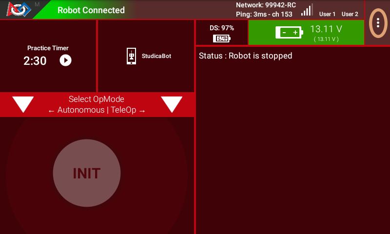
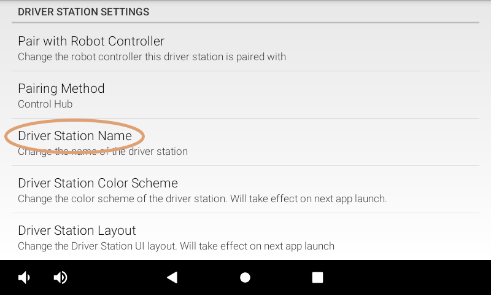
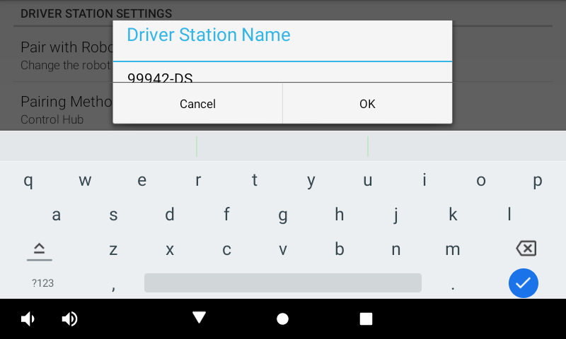
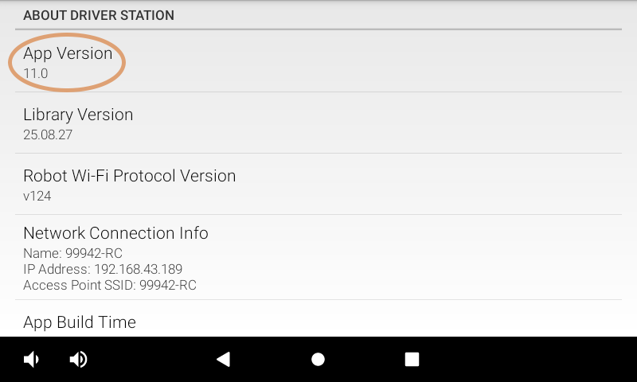

Managing a Driver Hub
REV Driver Hub
The REV Driver Hub is preloaded with the Driver Station (DS) app. The procedures described below for a REV Driver Hub, also apply to a using an Android phone as a DS.
Changing the Name
In order to comply with the Competition Manual, the name of the Driver Station (DS) should be changed. Configure devices for your team number. The ROBOT CONTROLLER, DRIVER STATION, and any spares used must be configured/named to correspond to the correct team number as follows:
ROBOT CONTROLLER should be named <team number>-RC (e.g., 12345-RC),
DRIVER STATION should be named <team number>-DS (e.g., 12345-DS), and
If a spare ROBOT CONTROLLER or DRIVER STATION is configured, a letter designator may be added <team number>-<letter>-RC/DS (e.g., 12345-A-DS, 12345-B-DS)
Check the current Competition Manual for the rules related to Control, Command & Signals System.
The Driver Hub name can be changed in the DS app, as described below.
Note
The steps below are mostly the same if you use an Android phone for your driver station.
If you are using phones for your control system this link shows how to rename a smartphone using the Android Settings activity of the phone.
Tip
Troubleshooting
If you see a yellow circled exclamation icon on your DS screen and touch it, a message will pop up temporarily and say “DS does not match DS, see the FTC Competition Manual”. Note: DS is the current name of the Driver Station, and RC is the current Robot Controller name.
This is because the DS and RC names do not match. You should change both names to include your team number as indicated above, as required by the Competition Manual.
Changing the Name of a Driver Station Instructions
1. In the Driver Station app, touch the three dots in the upper right hand corner to display a pop-up menu.
Select the Settings menu item from the pop-up menu.
3. Click on Driver Station Name on the DRIVER STATION SETTINGS page.
4. Specify the new Driver Station Name and press OK to accept the changes.
Updating the Driver Station App
It is important to know how to update the Driver Station app that is installed on your device. FIRST periodically releases new versions of this app, which contain improvements and fixes, as well as season-specific data and features.
Note that you can see the Driver Station app version number through the Driver Station user interface. Select the About menu option on the Driver Station and note the App Version number under the ABOUT DRIVER STATION section.
As of 2021, all apps (v 6.1 and higher) are no longer available on Google Play.
The REV Hardware Client software will allow you to download the apps to approved devices: REV Control Hub, REV Expansion Hub, REV Driver Hub, and approved Android devices. Here are some of the benefits:
Connect a REV Control Hub via WiFi.
One Click update of all software on connected devices.
Pre-download software updates without a connected device.
Back up and restore user data from Control Hub.
Install and switch between DS and RC applications on Android Devices.
Access the Robot Control Console on the Control Hub.
All teams using Blocks, OnBot Java or Android Studio can use the REV Hardware Client to update the Driver Station (DS) app on a DS phone.
NOTE: it will take an estimated 7.5 minutes per device to complete this task.
As an alternate, the app releases are available on the FTCRobotController Github. Download the Driver Station APK file to a computer, transfer it to the DS phone’s Downloads folder, then open that file to install the DS app. This process is called “side-loading”.
Important
If you update the Driver Station (DS) app, you should also update the Robot Controller (RC) app to the same version number. That process is different for Android Studio teams; updating RC phones is described found here